Data analysis: How have EU politics changed over time?
In light of the World Cup, let’s look at some European election data
These data are from www.parlgov.org — dataverse.harvard.edu/dataverse/parlgov
Let’s load up the data and check it out.
df <- readxl::read_xlsx('parlgov.xlsx', sheet = 'election')
df <- na.omit(df)
str(df)
## Classes 'tbl_df', 'tbl' and 'data.frame': 6458 obs. of 16 variables:
## $ country_name_short : chr "AUS" "AUS" "AUS" "AUS" ...
## $ country_name : chr "Australia" "Australia" "Australia" "Australia" ...
## $ election_type : chr "parliament" "parliament" "parliament" "parliament" ...
## $ election_date : chr "1903-12-16" "1903-12-16" "1903-12-16" "1906-12-02" ...
## $ vote_share : num 29.7 34.4 31 38.2 36.6 16.4 4.8 2.3 50 45.1 ...
## $ seats : num 26 25 23 27 26 16 4 2 43 31 ...
## $ seats_total : num 75 75 75 75 75 75 75 75 75 75 ...
## $ party_name_short : chr "PP" "FTP" "ALP" "FTP" ...
## $ party_name : chr "Protectionist Party" "Free Trade Party" "Australian Labor Party" "Free Trade Party" ...
## $ party_name_english : chr "Protectionist Party" "Free Trade Party" "Australian Labor Party" "Free Trade Party" ...
## $ left_right : num 7.4 6 3.88 6 3.88 ...
## $ country_id : num 33 33 33 33 33 33 33 33 33 33 ...
## $ election_id : num 730 730 730 725 725 725 725 725 747 747 ...
This dataset is quite interesting in that the parties were rated by political scientists for how “right” or “left” leaning the party was. Let’s see roughly whether there is a correlation between the percentage of “vote share” and the left/right leanings.
# Visualization of correlations
df %>% filter(country_name == 'Germany') %>%
select_if(is.numeric) %>%
select(-c(country_id, party_id, previous_parliament_election_id,
previous_cabinet_id,
election_id))%>%
cor() %>%
corrplot()
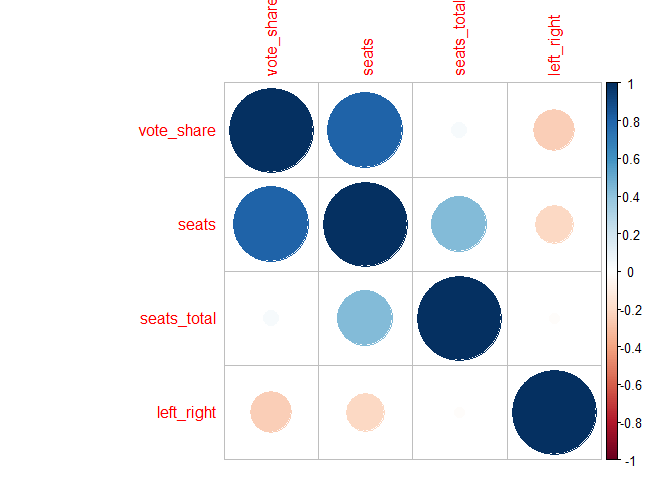
For Germany it looks like higher vote share is associated with more left-leaning groups. In other words, when a party tended to win a big share of votes, that party tended to be more left-leaning.
Let’s try Spain.
# Visualization of correlations SPAIN
df %>% filter(country_name == 'Spain') %>%
select_if(is.numeric) %>%
select(-c(country_id, party_id, previous_parliament_election_id,
previous_cabinet_id,
election_id))%>%
cor() %>%
corrplot()
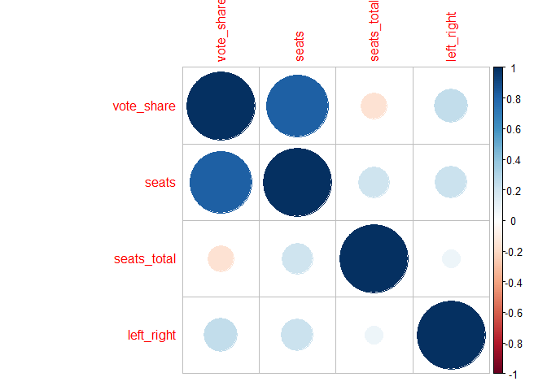
Whereas in Spain, more share of votes is associated with more rightward-leaning groups. Interesting, huh?
What about Japan, just for kicks?
# Visualization of correlations SPAIN
df %>% filter(country_name == 'Japan') %>%
select_if(is.numeric) %>%
select(-c(country_id, party_id, previous_parliament_election_id,
previous_cabinet_id,
election_id))%>%
cor() %>%
corrplot()
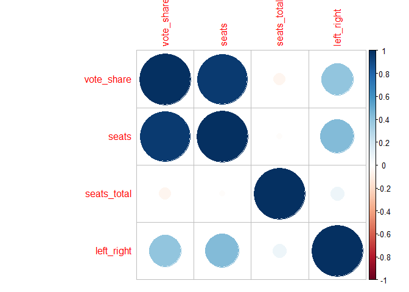
Japan seems to have a strong correlation between right-leaning parties and vote share. I’d wager that this is probably the global trend: conservative parties tend to win bigger in elections.
Now let’s look over time to see how political preferences have changed over the past decades. First we need to convert variable types for ggplot2
#let's remove some variables that we don't need
df <- df %>%
select(vote_share, seats_total, party_name_english, left_right, country_name,
election_date, seats)
#now let's convert some variables for better plotting
df <- df %>%
mutate(party_name = factor(party_name_english),
country_name = factor(country_name),
election_date = ymd(election_date))
head(df)
Let’s go back to Germany again
#which parties had the biggest share of votes?
df %>%
filter(country_name == 'Germany')%>%
group_by(party_name_english, election_date)%>%
arrange(desc(vote_share))
## # A tibble: 183 x 8
## # Groups: party_name_english, election_date [183]
## vote_share seats_total party_name_english left_right
## <dbl> <dbl> <chr> <dbl>
## 1 45.8 496 Social Democratic Party of Germany 3.6451
## 2 42.9 497 Social Democratic Party of Germany 3.6451
## 3 42.7 496 Social Democratic Party of Germany 3.6451
## 4 42.6 496 Social Democratic Party of Germany 3.6451
## 5 40.9 669 Social Democratic Party of Germany 3.6451
## 6 40.8 81 Social Democratic Party of Germany 3.6451
## 7 39.7 497 Christian Democratic Union 6.2503
## 8 39.3 496 Social Democratic Party of Germany 3.6451
## 9 39.3 99 Christian Democratic Union 6.2503
## 10 39.1 81 Christian Democratic Union 6.2503
## # ... with 173 more rows, and 4 more variables: country_name <fctr>,
## # election_date <date>, seats <dbl>, party_name <fctr>
Now let’s zoom in on the SPD over time.
df %>%
filter(party_name == 'Social Democratic Party of Germany')%>%
group_by(election_date)%>%
ggplot(aes(x=election_date, y=seats))+
geom_line()
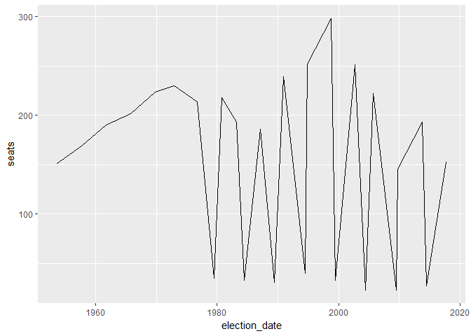
The black line at the bottom is % of votes. The red line is number of seats won in Parliament.
df %>%
filter(party_name == 'Social Democratic Party of Germany')%>%
group_by(election_date)%>%
ggplot(aes(x=election_date, y=vote_share))+
geom_line()+
geom_line(aes(y=seats), color='red')+
labs(title='The SPD\'s share of votes and seats over time.', y='seats won')
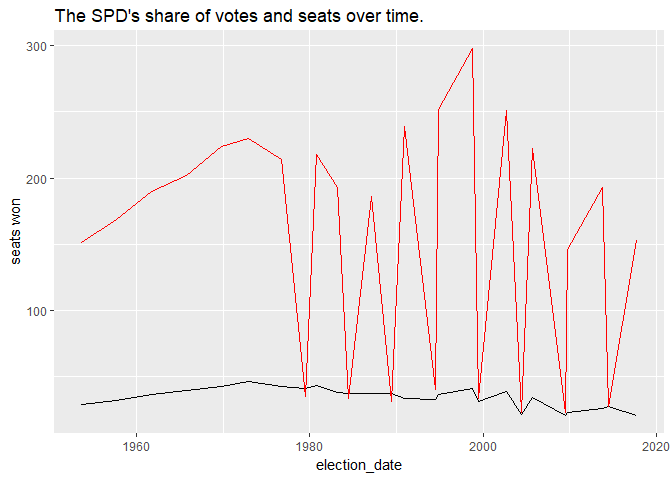
#Find parties with most total seats won
top_parties <- df %>%
filter(country_name == 'Germany')%>%
group_by(party_name)%>%
summarize(total_vot = sum(seats))%>%
arrange(desc(total_vot))%>%
head(7)
name_vec <- factor(as.character(top_parties$party_name[1:7]))
df %>%
filter(party_name %in% name_vec)%>%
group_by(election_date, party_name)%>%
ggplot(aes(x=election_date, y=vote_share, color=party_name))+
geom_line()+
facet_grid(party_name ~ .)+
labs(title='% vote share for top 7 parties.', y='vote share %')
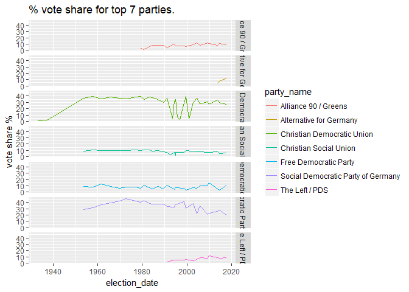
It looks like overall the big parties (CDU/SPD) have slowly declined in terms of vote share while new, smaller leftist parties are gaining traction.
Let’s see how the left-right preferences have changed over time in Germany
df %>%
filter(country_name == 'Germany')%>%
group_by(election_date)%>%
summarize(avg_political = mean(left_right, na.rm=TRUE))%>%
ggplot(aes(x=election_date, y=avg_political, color=avg_political))+
geom_line(size=3)+
scale_color_gradient(low='blue', high='red')+
scale_x_date(date_breaks = '10 years')+
labs(title='Are Germany\'s politicians more right (red) or left (blue)?',
y='left right spectrum (higher is more conservative)')
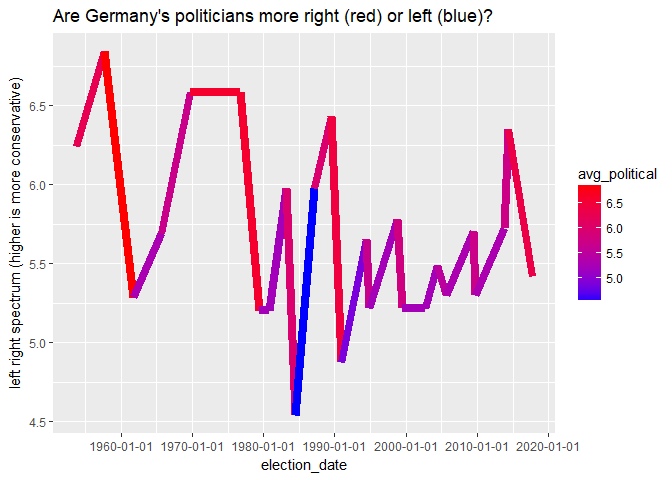
It looks like after the fall of the Wall in ‘89 that German politics took a slight shift left. Let’s compare with a similar country to see if this might be a trend. We’ll take neighboring countries in the EU as our comparison group.
eu_country <- c('Denmark','Belgium', 'Austria', 'Switzerland',
'Spain', 'Hungary', 'Sweden', 'Portugal', 'Ireland', 'Luxembourg',
'Poland', 'France', 'Czech Republic', 'Greece', 'United Kingdom', 'Italy',
'Netherlands', 'Slovakia','Germany', 'Malta', 'Slovenia', 'Bulgaria',
'Finland', 'Estonia', 'Cyprus','Romania', 'Latvia', 'Croatia',
'Lithuania')
df %>%
filter(country_name %in% eu_country)%>%
group_by(country_name,election_date)%>%
summarize(avg_political = mean(left_right, na.rm=TRUE))%>%
ggplot(aes(x=election_date, y=avg_political, color=avg_political))+
geom_line(size=.7)+
scale_color_gradient(low='blue', high='red')+
scale_x_date(date_breaks = '20 years')+
facet_wrap(~ country_name, ncol=7, scales='free_x')+
labs(title='Are Europe\'s politicians more (red) or left (blue)?',
y='left right spectrum (higher is more conservative)')
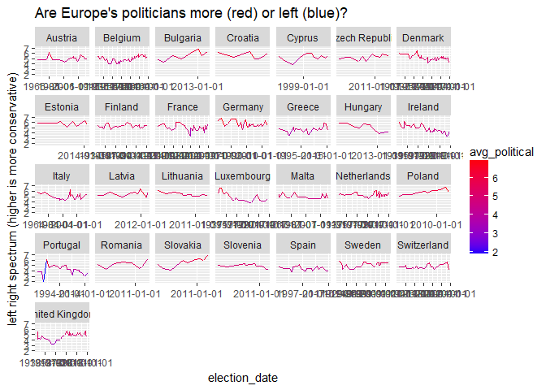
Don’t mind the terrible formatting of dates, and beware that the x-axis is freely moving depending on the available election dates for each country. A couple things jump out, first Portugal seems way more leftist than most EU countries. The UK also seems to have dabbled with that as well. Poland, on the other hand, seems to have steadily become more conservative. Let’s try to quantify the stability of political opinion by finding the standard deviation of political left/right rating for these countries.
df %>%
filter(country_name %in% eu_country)%>%
group_by(country_name)%>%
summarize(avg_pol = mean(left_right, na.rm=TRUE),
sd_pol = sd(left_right, na.rm=TRUE))%>%
arrange(desc(sd_pol))
## # A tibble: 29 x 3
## country_name avg_pol sd_pol
## <fctr> <dbl> <dbl>
## 1 Hungary 5.111330 2.809641
## 2 France 4.988990 2.808328
## 3 Cyprus 5.323077 2.751259
## 4 Luxembourg 4.740220 2.618672
## 5 Switzerland 4.820141 2.616909
## 6 Croatia 5.623034 2.599324
## 7 Austria 4.994259 2.577238
## 8 Greece 4.807284 2.569428
## 9 Netherlands 5.307811 2.537512
## 10 Germany 5.714425 2.477178
## # ... with 19 more rows
df %>%
filter(country_name %in% eu_country)%>%
ggplot(aes(x=reorder(country_name, left_right), y=left_right, fill=country_name))+
geom_boxplot()+
coord_flip()
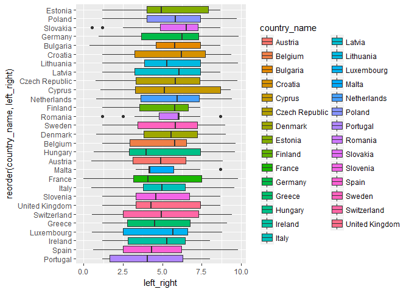
df %>%
filter(country_name %in% eu_country)%>%
group_by(country_name)%>%
summarize(max_pol = max(left_right),
min_pol = min(left_right))%>%
arrange(desc(max_pol))
## # A tibble: 29 x 3
## country_name max_pol min_pol
## <fctr> <dbl> <dbl>
## 1 Germany 9.8246 0.9570
## 2 France 9.8000 0.0000
## 3 Lithuania 9.8000 1.2000
## 4 Spain 9.8000 0.5909
## 5 Czech Republic 9.7778 0.7498
## 6 Poland 9.7368 1.2000
## 7 Belgium 9.6622 1.2000
## 8 Hungary 9.6065 0.6316
## 9 Italy 9.5762 0.5000
## 10 Switzerland 9.4247 0.5263
## # ... with 19 more rows
So we can see that France has clearly tried pretty much every available political system, from far left to far right. Some countries, for example, Ireland, seem pretty stable. Let’s see how these results compare to non-EU countries.
#Get vector of non_eu
ct_names <- as.character(unique(df$country_name))
non_eu <- setdiff(ct_names, eu_country)
df %>%
filter(country_name %in% non_eu)%>%
group_by(country_name,election_date)%>%
summarize(avg_political = mean(left_right, na.rm=TRUE))%>%
ggplot(aes(x=election_date, y=avg_political, color=avg_political))+
geom_line(size=.7)+
scale_color_gradient(low='blue', high='red')+
scale_x_date(date_breaks = '20 years')+
facet_wrap(~ country_name, ncol=4, scales='free_x')+
labs(title='Are non-EU politicians more (red) or left (blue)?',
y='left right spectrum (higher is more conservative)')
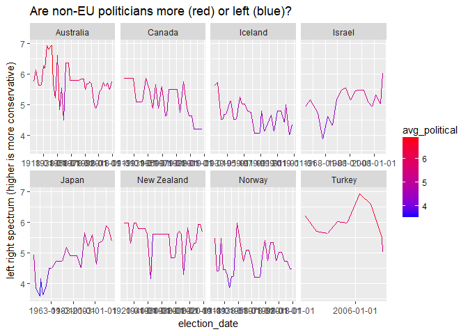
What can we say from these charts? Well, first of all some countries have much less data than others (Turkey). But overall they seem quite leftist. Let’s check that with a boxplot.
df %>%
filter(country_name %in% non_eu)%>%
ggplot(aes(x=reorder(country_name, left_right), y=left_right, fill=country_name))+
geom_boxplot()+
coord_flip()+
labs(title='Political leanings by country')
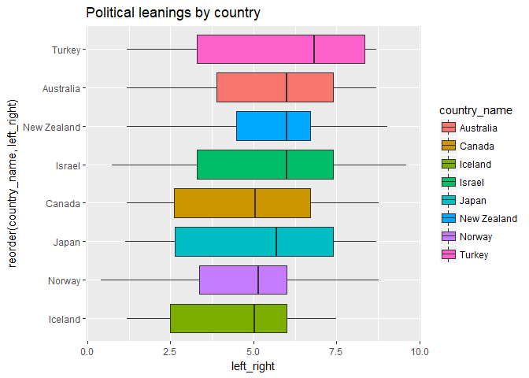
Here we see most of these countries appear pretty moderate, if not slightly right-leaning. However, Turkey is strongly right-leaning compared to the rest (perhaps another reason it still hasn’t joined the EU?). Also NZ and Norway have pretty consistent political stances, compared to Israel or Portugal.
That’s all for now. I’ll get back to this dataset another time to continue exploring.